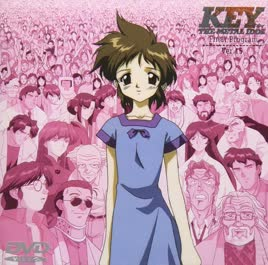
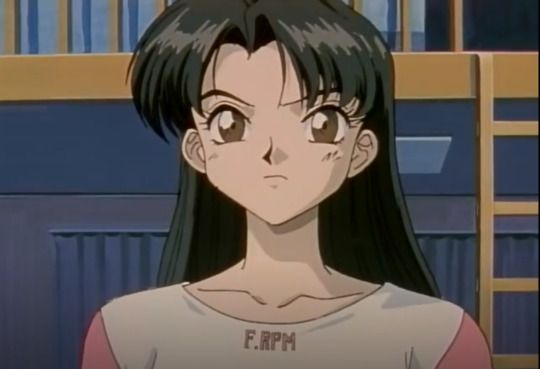
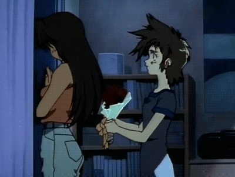
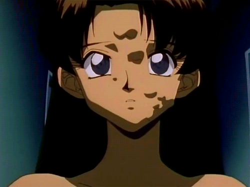
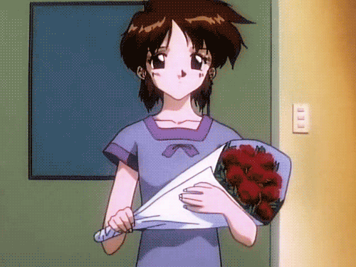

You might have heard before where I spoke about Key: The Metal Idol, which at first I thought to be something similar to Lain but with an actual story. It was already cryptic in its first episodes but it was NOT easy at the end (last 2 episodes are like 90+ min long). I mean, this is about some robot girl (Tokiko "Key" Mima) whom her "grandpa" passed away and was told by him that she can turn human if she got "30,000" friends, WHAT COULD GO WRONG??
...but what follows is just a deep emotional gut-punch, I dunno how to explain it. Key has, well, reached her goal, but perhaps not through fame as she thought, but through something else entirely.
(srsly, it's massive spoilers and raw emotional reactions. Stop if you haven't watched or if you "don't care" >:c)

Let's talk about Sakura Kuriyagawa, a supposedly side character who isn't "important" that much at first as I expected. Like, she's not trying to save the world or be famous or anything, she's just HUMAN.

I mean, she was the only one who really treated Key like a person, instead of a robot, a child, or a property. And for that, she's rewarded with the one of the most HORRIFYING deaths I've ever seen. She was literally almost saved and close to surviving. But Ajo (aka "Boss") didn't care and took all the Gel out of her they could produce.
And to make it worse, they fuarrrking CLONED her, built a PPOR of her to fake her memory or something. That just made me so pissed, really.
In the last episode, that PPOR appears and tells key:
You're late, Key. I finally got away. It was terrible. Let's go home.

And then it chokes her. Wow... That wasn't Sakura-chan. Key realized it, makes it melt, and she just runs screaming for her real friend, until she found some barrel among many. I'm probably never gonna forget that. It was like, the last "proof" Sakura ever existed.
At moments like this Key actually started becoming fully human, yeah, while she was already singing what her mom sang for her as a child. Doesn't this make you think that Key became human through grief instead of applause from random strangers? It was at that moment where she produced Gel endlessly.
I dunno what to say. That anime was just... good and strange. Even though I barely watch anime nowadays, I think that one's worth it, really.
